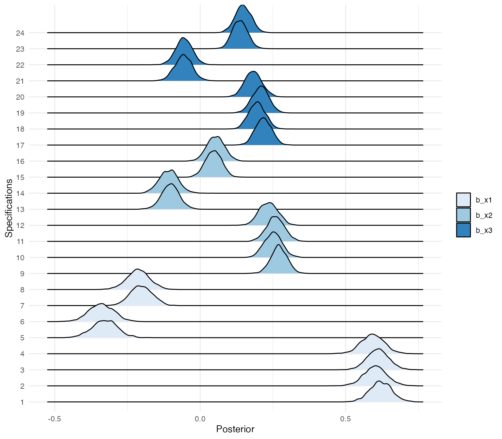
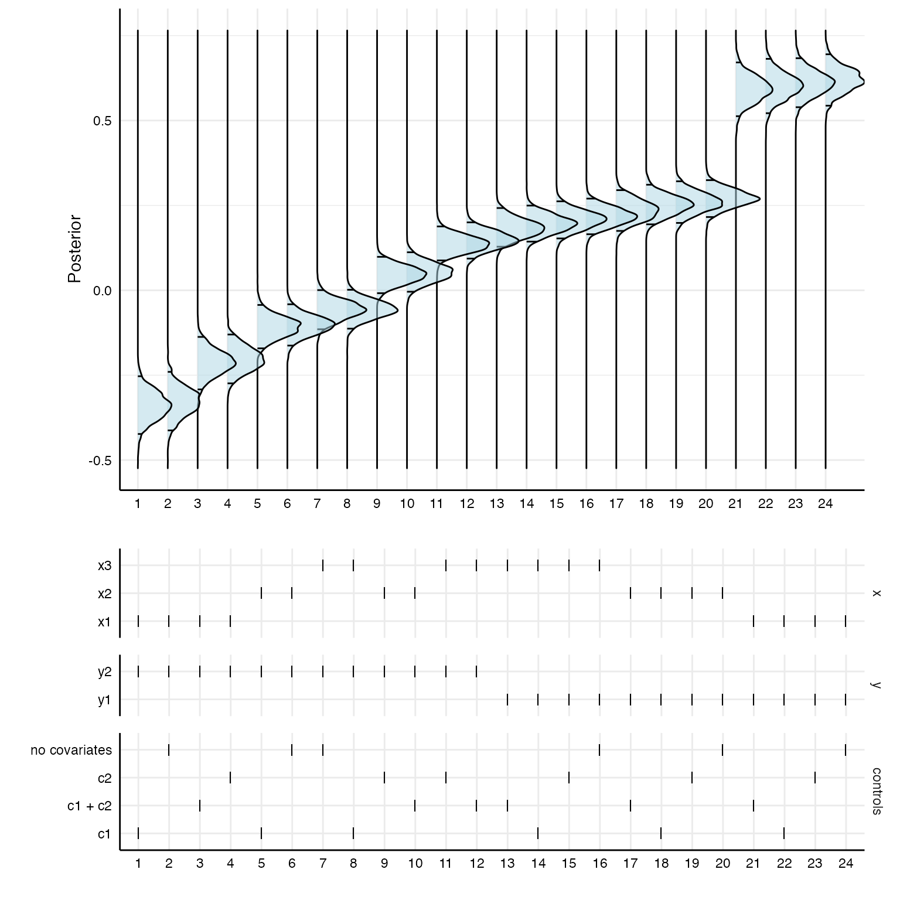

Incorporating Bayesian Statistics
Source:vignettes/parallel-bayesian-models.Rmd
parallel-bayesian-models.RmdThis vignette shows how to incorporate Bayesian modeling using the
package brms in specr. When
we fit a model with brms, the package actually calls Rstan
in the background, which, in turn, is an R interface to the statistical
programming language Stan. Stan is built in the programming
language C++ and models have to be compiled using C++ to be run. This is
all taken care of by brms, so you just need to run brm(…)
to fit any model. brms uses a syntax for specifying model
formulae that is based on the syntax of the commonly known lme4 package
(for multilevel modeling). The comparatively easy syntax of
brms is then converted into Stan code automatically.
That said, since the models have to be compiled in C++, you need to set up your computer so that it can actually use C++. This has to be done only once, before installing brms. Unfortunately, as almost always, how you install C++ depends on your operating system. Check this vignette to if you have problems installing brms.
Setting up custom functions
Although you can simply pass the function brm to
setup without any specific custom function, it usually
makes sense to set up some custom model fitting and extraction functions
to make sure specr() does exactly what we want.
Here, I am creating a custom model fitting function and specify relevant parameters for the Bayesian models. Here, I am only switching off the progress indication and messages, and reduce the iterations to 1000 to save time. Of course, we can bump this up to wherever we need it to be.
Note that you can use specr to parallelize the process (then you
would set cores = 1 in the brm function) and use the
parallelization via furrr as outlined in this
vignette. Alternatively, we can let brms parallelize
the process (e.g., by setting cores = 4). Then, we would
not use the parallelization procedure by specr. Here, I
keep it simple and just do all computations sequentially. Thus, all
chains per specifications as well as the specifications themselves are
fitted one after the other.
If you want to be able to inspect each brms-object after the
computation, I suggest to also create a custom fit extract function.
Here, I added the full brms.fit object to the
glance output. This way, we can later access the entire
object in order to e.g., extract posterior distributions or other
aspects of the Bayesian models.
# Customized function, not necessary if standard values are to be used
brm_new <- function(formula, data) {
brm(formula, data,
silent = 2, # Don't print progress
refresh = 0, # Remove message (not necessary, but nicer in the output)
iter = 1000) # I just set this here to reduce computing time, can be higher, of course
}
# New fun2, fit extract function
glance_brm <- function(x) {
fit2 <- broom::glance(x)
fit2$full_model <- list(x) # add full model
return(fit2)
}
# Setting up specifications
specs <- setup(data = example_data,
x = c("x1", "x2", "x3"),
y = c("y1", "y2"),
model = "brm_new",
controls = c("c1", "c2"),
fun2 = glance_brm)
# Check specs
summary(specs)
#> Setup for the Specification Curve Analysis
#> -------------------------------------------
#> Class: specr.setup -- version: 1.0.0
#> Number of specifications: 24
#>
#> Specifications:
#>
#> Independent variable: x1, x2, x3
#> Dependent variable: y1, y2
#> Models: brm_new
#> Covariates: no covariates, c1, c2, c1 + c2
#> Subsets analyses: all
#>
#> Function used to extract parameters:
#>
#> function(x) broom::tidy(x, conf.int = TRUE)
#> <environment: 0x7f9c7371bad0>
#>
#>
#> Head of specifications table (first 6 rows):
#> # A tibble: 6 × 6
#> x y model controls subsets formula
#> <chr> <chr> <chr> <chr> <chr> <glue>
#> 1 x1 y1 brm_new no covariates all y1 ~ x1 + 1
#> 2 x1 y1 brm_new c1 all y1 ~ x1 + c1
#> 3 x1 y1 brm_new c2 all y1 ~ x1 + c2
#> 4 x1 y1 brm_new c1 + c2 all y1 ~ x1 + c1 + c2
#> 5 x1 y2 brm_new no covariates all y2 ~ x1 + 1
#> 6 x1 y2 brm_new c1 all y2 ~ x1 + c1Estimating the models
Because we are estimating 24 Bayesian models, this may take a while (see above for ways to parallelize the computations).
results <- specr(specs)Now we can again summarize and plot our results.
summary(results)
#> Results of the specification curve analysis
#> -------------------
#> Technical details:
#>
#> Class: specr.object -- version: 1.0.0
#> Cores used: 1
#> Duration of fitting process: 9.25 sec elapsed
#> Number of specifications: 24
#>
#> Descriptive summary of the specification curve:
#>
#> median mad min max q25 q75
#> 0.16 0.25 -0.34 0.62 -0.07 0.25
#>
#> Descriptive summary of sample sizes:
#>
#> median min max
#> 1000 1000 1000
#>
#> Head of the specification results (first 6 rows):
#>
#> # A tibble: 6 × 18
#> x y model controls subsets formula effect component group estimate std.error
#> <chr> <chr> <chr> <chr> <chr> <glue> <chr> <chr> <chr> <dbl> <dbl>
#> 1 x1 y1 brm_new no covariates all y1 ~ x1 + 1 fixed cond <NA> 0.62 0.04
#> 2 x1 y1 brm_new c1 all y1 ~ x1 + c1 fixed cond <NA> 0.6 0.04
#> 3 x1 y1 brm_new c2 all y1 ~ x1 + c2 fixed cond <NA> 0.61 0.04
#> 4 x1 y1 brm_new c1 + c2 all y1 ~ x1 + c… fixed cond <NA> 0.59 0.04
#> 5 x1 y2 brm_new no covariates all y2 ~ x1 + 1 fixed cond <NA> -0.33 0.04
#> 6 x1 y2 brm_new c1 all y2 ~ x1 + c1 fixed cond <NA> -0.34 0.04
#> # … with 7 more variable: conf.low <dbl>, conf.high <dbl>, fit_algorithm <chr>, fit_pss <dbl>
#> # fit_nobs <dbl>, fit_sigma <dbl>, fit_full_model <list>
plot(results, choices = c("x", "y", "controls"))
Again, the coefficients are median estimates from the posterior and their respective 95% HDIs.
Inspecting specific models
Because we kept the entire brms models in our result data set, we can
explore specific models using the pull function.
# Pull entire models from the listed vector
models <- results %>%
as_tibble %>%
pull(fit_full_model)
# Summarize e.g., the first model
summary(models[[1]])
#> Family: gaussian
#> Links: mu = identity; sigma = identity
#> Formula: y1 ~ x1 + 1
#> Data: data (Number of observations: 1000)
#> Draws: 4 chains, each with iter = 1000; warmup = 500; thin = 1;
#> total post-warmup draws = 2000
#>
#> Population-Level Effects:
#> Estimate Est.Error l-95% CI u-95% CI Rhat Bulk_ESS Tail_ESS
#> Intercept -1.10 0.04 -1.17 -1.02 1.00 1915 1356
#> x1 0.62 0.04 0.55 0.69 1.00 1900 1631
#>
#> Family Specific Parameters:
#> Estimate Est.Error l-95% CI u-95% CI Rhat Bulk_ESS Tail_ESS
#> sigma 1.14 0.03 1.09 1.18 1.00 2903 1542
#>
#> Draws were sampled using sampling(NUTS). For each parameter, Bulk_ESS
#> and Tail_ESS are effective sample size measures, and Rhat is the potential
#> scale reduction factor on split chains (at convergence, Rhat = 1).From these model fit objects, we can also extract posterior distributions for the parameters of interest and stort them in one data frame.
posteriors <- results %>%
as_tibble %>%
pull(fit_full_model) %>%
map(function(x) as_tibble(as_draws_df(x))[, 2] %>%
gather(key, value)) %>%
bind_rows(., .id = "id")
# First 10 draws from the first specification for predictor `x2`
head(posteriors, n = 10)
#> # A tibble: 10 × 3
#> id key value
#> <chr> <chr> <dbl>
#> 1 1 b_x1 0.642
#> 2 1 b_x1 0.655
#> 3 1 b_x1 0.647
#> 4 1 b_x1 0.650
#> 5 1 b_x1 0.611
#> 6 1 b_x1 0.736
#> 7 1 b_x1 0.565
#> 8 1 b_x1 0.624
#> 9 1 b_x1 0.602
#> 10 1 b_x1 0.611Plotting posterior distributions for all specifications
Using the ggridges package, we can plot the posterior
distributions of the different specifications.
posteriors %>%
mutate(id = factor(id, levels = 1:24)) %>%
ggplot(aes(x = value, y = id, fill = key)) +
geom_density_ridges() +
scale_fill_brewer(palette = "Blues") +
theme_minimal()+
labs(x = "Posterior",
y = "Specifications",
fill = "")
Of course, the posterior distributions are not sorted in any way. With a bit of data wrangling, we can create a specification curve consisting of posterior distributions.
# First panel
p1 <- results %>%
as_tibble %>%
mutate(id = as.character(1:nrow(.))) %>%
arrange(estimate) %>%
mutate(specifications = factor(as.character(1:nrow(.)),
levels = c(1:24))) %>%
left_join(posteriors) %>%
ggplot(aes(x = value, y = specifications)) +
stat_density_ridges(quantile_lines = TRUE,
quantiles = c(0.025, 0.975),
alpha = .5,
fill = "lightblue",
color = "black") +
coord_flip() +
theme_minimal() +
labs(x = "Posterior", y = "") +
theme(strip.text = element_blank(),
axis.line = element_line("black", size = .5),
legend.position = "none",
panel.spacing = unit(.75, "lines"),
axis.text = element_text(colour = "black"))
# Second panel
p2 <- results %>%
as_tibble %>%
arrange(estimate) %>%
mutate(specifications = factor(as.character(1:nrow(.)),
levels = c(1:24))) %>%
gather(key, value, c("x", "y", "controls")) %>%
mutate(key = factor(key, levels = c("x", "y", "controls"))) %>%
ggplot() +
geom_point(aes(x = specifications,
y = value),
shape = 124,
size = 3.35) +
theme_minimal() +
facet_grid(.data$key~1, scales = "free_y", space = "free_y") +
theme(
axis.line = element_line("black", size = .5),
legend.position = "none",
panel.spacing = unit(.75, "lines"),
axis.text = element_text(colour = "black"),
strip.text.x = element_blank()) +
labs(x = "", y = "")
# Combine
plot_grid(p1, p2,
ncol = 1,
align = "hv",
axis = "tblr",
rel_heights = c(3, 2))